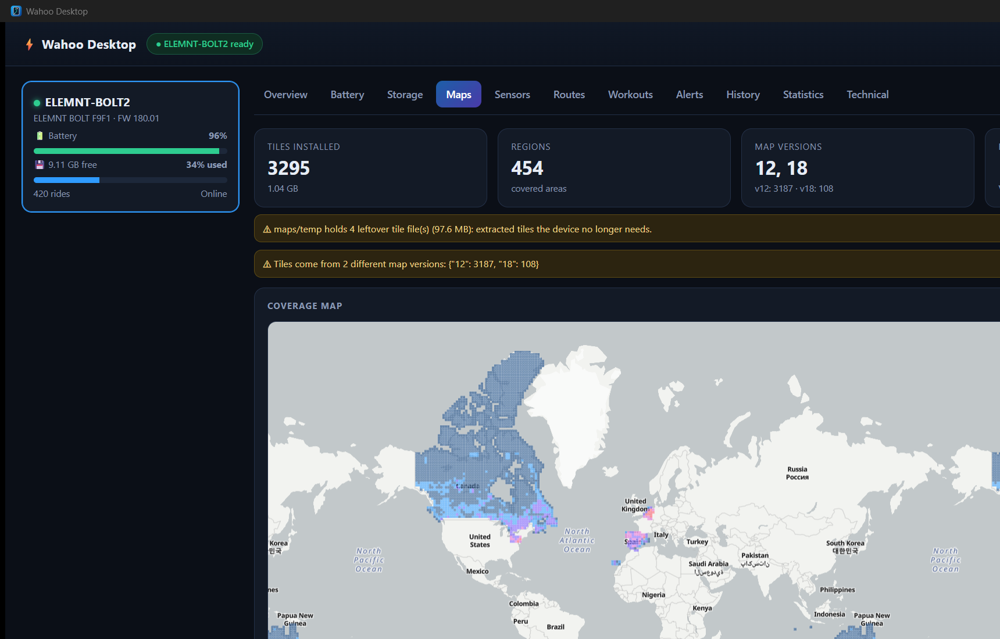
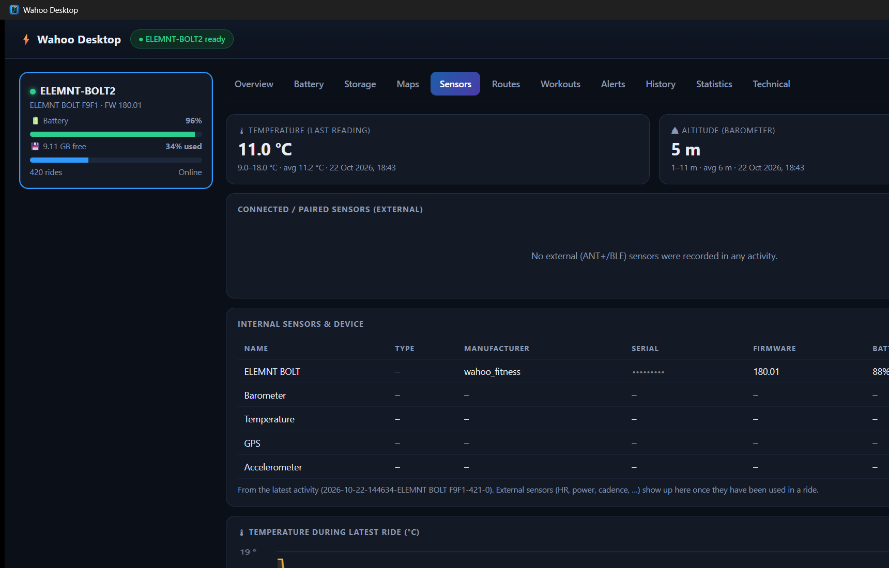
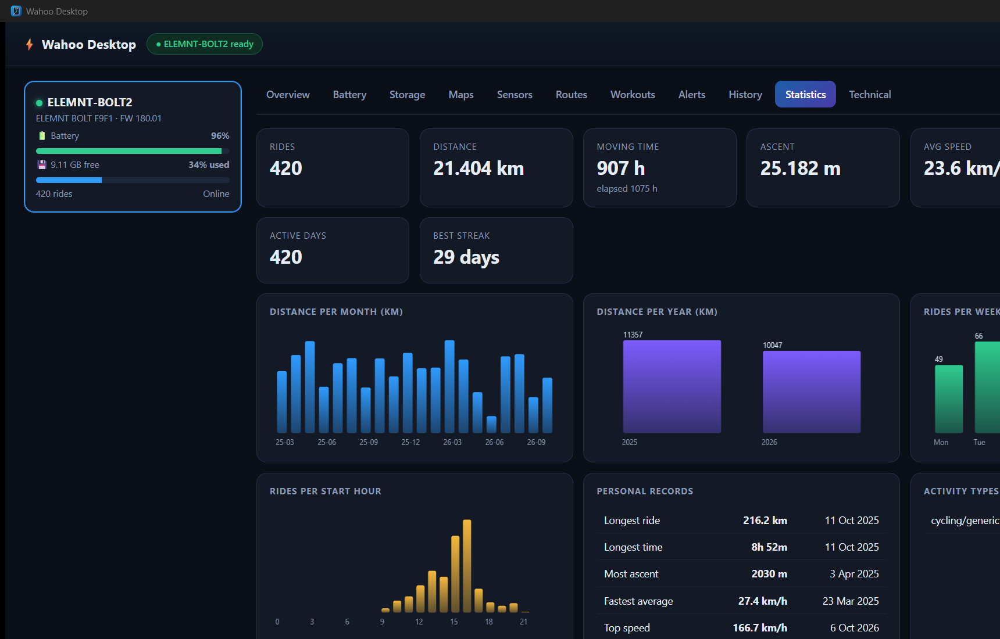

Wahoo Desktop
A fast, local desktop app that reads your Wahoo ELEMNT over USB. No cloud, no phone, no account.
Download for Windows View on GitHubVersion 0.1 · Windows 10/11 · tested with ELEMNT BOLT2 · installer: WahooDesktop-Setup-0.1.0.exe

What it does
Connect your ELEMNT with a data cable, switch it on and click Sync device. Everything is mirrored to a local cache, so the app is instant and works offline. Built in Rust with a native window (no web server, no open ports).
- Device: firmware, hardware, battery history and storage breakdown
- Maps: installed tiles on a map, versions, leftover files and warnings; map packs with version and date, and download of newer packs (also via
wahoo_cli map-packs/map-download) - Routing: Valhalla routing tiles on the device: tile counts per level and a coverage map
- Sensors: temperature, altitude and acceleration charts from your rides
- Routes: view saved routes on a map, drag and drop a
.gpxor.fitto add one - History: sortable activity list with map, charts, laps and statistics
- Alerts & workouts, personal records, and a
wahoo_clicommand-line tool


Install
Download the installer from the latest release and run it. It installs per user (no admin rights needed). Requires the WebView2 runtime, which is preinstalled on current Windows versions. macOS and Linux are planned.